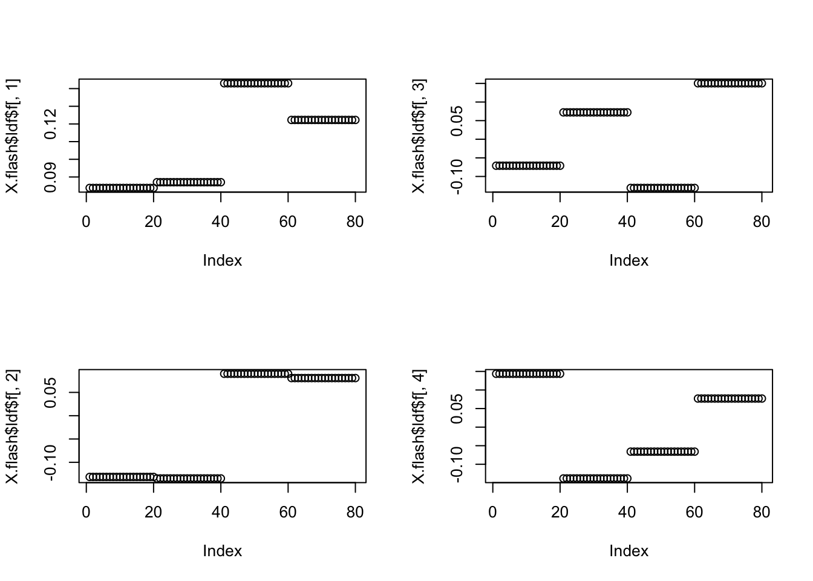
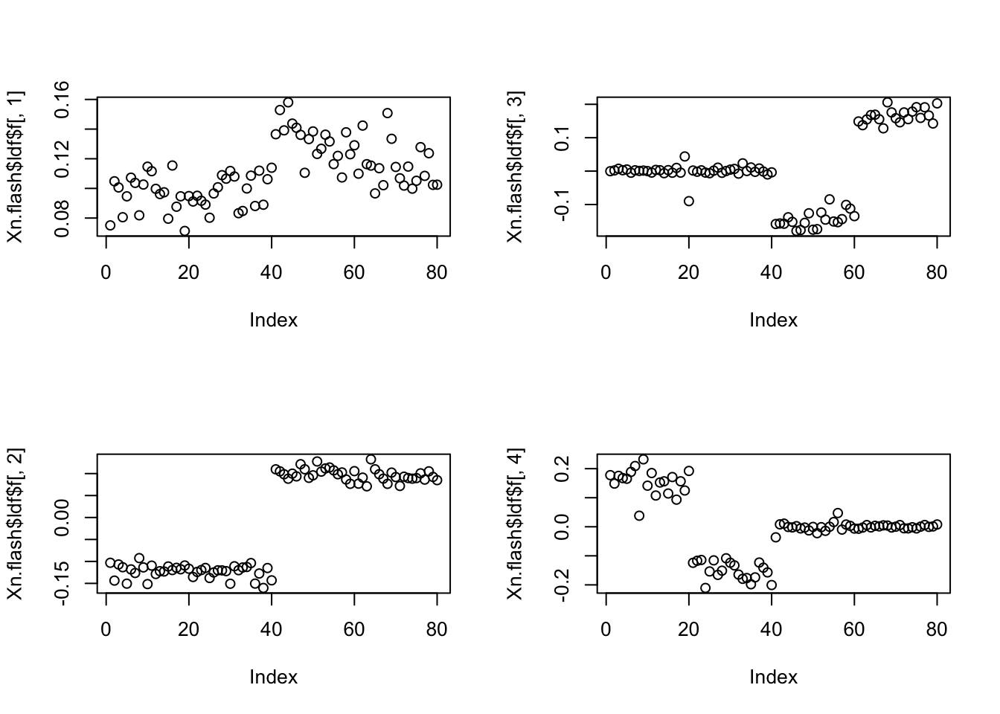
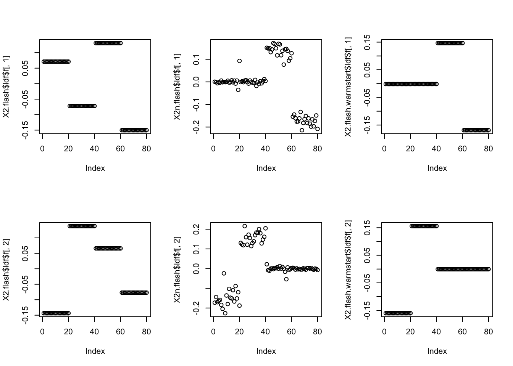
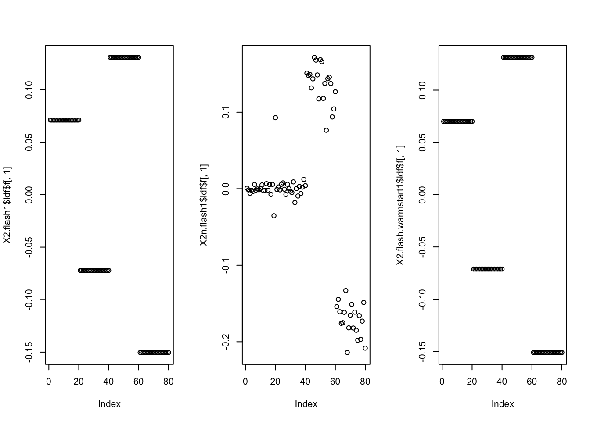

Investigation of Warmstart Advantage
Joonsuk Kang
2020-11-1
Last updated: 2020-11-02
Checks: 7 0
Knit directory: mf/
This reproducible R Markdown analysis was created with workflowr (version 1.6.2). The Checks tab describes the reproducibility checks that were applied when the results were created. The Past versions tab lists the development history.
Great! Since the R Markdown file has been committed to the Git repository, you know the exact version of the code that produced these results.
Great job! The global environment was empty. Objects defined in the global environment can affect the analysis in your R Markdown file in unknown ways. For reproduciblity it’s best to always run the code in an empty environment.
The command set.seed(20201010) was run prior to running the code in the R Markdown file. Setting a seed ensures that any results that rely on randomness, e.g. subsampling or permutations, are reproducible.
Great job! Recording the operating system, R version, and package versions is critical for reproducibility.
Nice! There were no cached chunks for this analysis, so you can be confident that you successfully produced the results during this run.
Great job! Using relative paths to the files within your workflowr project makes it easier to run your code on other machines.
Great! You are using Git for version control. Tracking code development and connecting the code version to the results is critical for reproducibility.
The results in this page were generated with repository version 5253653. See the Past versions tab to see a history of the changes made to the R Markdown and HTML files.
Note that you need to be careful to ensure that all relevant files for the analysis have been committed to Git prior to generating the results (you can use wflow_publish or wflow_git_commit). workflowr only checks the R Markdown file, but you know if there are other scripts or data files that it depends on. Below is the status of the Git repository when the results were generated:
Ignored files:
Ignored: .Rhistory
Ignored: .Rproj.user/
Ignored: analysis/.Rhistory
Untracked files:
Untracked: analysis/demo_toy.Rmd
Untracked: code/code_wflow_publish.R
Untracked: code/temp.R
Untracked: output/Likelihood.gif
Untracked: writing/
Unstaged changes:
Deleted: analysis/ChoosingW.Rmd
Deleted: analysis/concentration.Rmd
Modified: analysis/index.Rmd
Note that any generated files, e.g. HTML, png, CSS, etc., are not included in this status report because it is ok for generated content to have uncommitted changes.
These are the previous versions of the repository in which changes were made to the R Markdown (analysis/warmstart.Rmd) and HTML (docs/warmstart.html) files. If you’ve configured a remote Git repository (see ?wflow_git_remote), click on the hyperlinks in the table below to view the files as they were in that past version.
| File | Version | Author | Date | Message |
|---|---|---|---|---|
| Rmd | 5253653 | Joonsuk Kang | 2020-11-02 | Investigation of Warmstart Advantage |
| html | ad8f4a9 | Joonsuk Kang | 2020-11-02 | Build site. |
| Rmd | ea4a36b | Joonsuk Kang | 2020-11-02 | Investigation on Warmstart Advantage |
Summary
We investigated the warmstart advantage from https://stephens999.github.io/misc/tree_pca_03.html.
The warmstart advantage disappears when we restrict to rank-1 approximation. Rather than the current (and feasible) marginal fitting of factors, joint estimation of multiple factors may be the key to obtaining a better solution.
Previous Analysis
The previous investigation showed (presented in Recap section below):
- (setting 1) flash is not satisfactory in this problem (solution not sparse)
- (setting 2) with a specific noise setting, flash worked
- (setting 3) given the solution in (setting 2) as the warmstart, flash worked in the original setting (setting 1); elbo of the warmstart method is much higher than in setting 1 .
Based on the observations, Matthew commented “the objective with warmstart is much larger, demonstrating this is a convergence problem rather than a fundamental problem with the objective function”
New Observations
- As expected, when we remove first two factors, the warmstart advantage is still remaining.
- However, when we restrict to rank-1 estimation, the warmstart advantage disappears.
Thoughts
In our toy data, the singular values of X are 255, 237, 140, 134, and the others are 0. After removing the first two, we are left with the other two (X2). The singular values 140 and 134 are similar but different. Intuitively, in our situation, when we’re allowed to use only one factor, we should stick to the first singular vector, which corresponds to the greatest singular value, though it seems (to us) comparable to the second largest singular value.
The real edge of warmstart was proposing an initialization for the set of two factors. Once given the set of two factors, the flash machine marginally could tune up the solution. But when given only one initialization, it regressed to the nonsparse svd solution.
Therefore, the key to get a sparse/nice solution in similar situations would be to allow fitting multiple factors simultaneously. In addition to the integrate out f approach, this joint estimation of multiple factors approach would be also helpful.
Recap
Data (identical to the previous seeds)
set.seed(123)
p = 1000
n = 20
f = list()
for(i in 1:6){
f[[i]] = rnorm(p)
}
X =matrix(0,ncol=4*n, nrow=p)
X[,1:(2*n)] = f[[1]]
X[,(2*n+1):(4*n)] = f[[2]]
X[,1:n] = X[,1:n]+f[[3]]
X[,(n+1):(2*n)] = X[,(n+1):(2*n)]+f[[4]]
X[,(2*n+1):(3*n)] = X[,(2*n+1):(3*n)] + f[[5]]
X[,(3*n+1):(4*n)] = X[,(3*n+1):(4*n)] + f[[6]]
X.svd = svd(X)
X.svd$d[1:10] [1] 2.555150e+02 2.370327e+02 1.402663e+02 1.345016e+02 1.146709e-13
[6] 1.022084e-13 3.826175e-14 3.077609e-14 2.377645e-14 2.377645e-14set.seed(5)
Xn = X + rnorm(4*n*p,sd=3)Model Fitting
# flash
X.flash = flashr::flash(X,10,ebnm_fn = list(l="ebnm_pn", f="ebnm_ash"),var_type = "constant")Fitting factor/loading 1 (stop when difference in obj. is < 1.00e-02): Iteration Objective Obj Diff 1 -122756.12 Inf 2 -122752.26 3.86e+00 3 -122752.12 1.40e-01 4 -122752.02 1.05e-01 5 -122751.94 7.95e-02 6 -122751.88 6.03e-02 7 -122751.83 4.58e-02 8 -122751.80 3.50e-02 9 -122751.77 2.68e-02 10 -122751.75 2.06e-02 11 -122751.73 1.59e-02 12 -122751.72 1.24e-02 13 -122751.71 9.65e-03Performing nullcheck... Deleting factor 1 decreases objective by 1.83e+04. Factor retained. Nullcheck complete. Objective: -122751.71Fitting factor/loading 2 (stop when difference in obj. is < 1.00e-02): Iteration Objective Obj Diff 1 -90298.98 Inf 2 -90295.31 3.67e+00 3 -90295.30 1.90e-03Performing nullcheck... Deleting factor 2 decreases objective by 3.25e+04. Factor retained. Nullcheck complete. Objective: -90295.3Fitting factor/loading 3 (stop when difference in obj. is < 1.00e-02): Iteration Objective Obj Diff 1 -65811.86 Inf 2 -65807.92 3.94e+00 3 -65807.69 2.35e-01 4 -65807.49 1.99e-01 5 -65807.32 1.69e-01 6 -65807.18 1.43e-01 7 -65807.05 1.21e-01 8 -65806.95 1.03e-01 9 -65806.86 8.74e-02 10 -65806.79 7.42e-02 11 -65806.73 6.30e-02 12 -65806.67 5.35e-02 13 -65806.63 4.55e-02 14 -65806.59 3.87e-02 15 -65806.56 3.29e-02 16 -65806.53 2.80e-02 17 -65806.50 2.39e-02 18 -65806.48 2.03e-02 19 -65806.47 1.73e-02 20 -65806.45 1.48e-02 21 -65806.44 1.26e-02 22 -65806.43 1.08e-02 23 -65806.42 9.22e-03Performing nullcheck... Deleting factor 3 decreases objective by 2.45e+04. Factor retained. Nullcheck complete. Objective: -65806.42Fitting factor/loading 4 (stop when difference in obj. is < 1.00e-02): Iteration Objective Obj Diff 1 20638.36 Inf 2 20642.02 3.66e+00 3 20642.02 6.64e-04Performing nullcheck... Deleting factor 4 decreases objective by 8.64e+04. Factor retained. Nullcheck complete. Objective: 20642.02Fitting factor/loading 5 (stop when difference in obj. is < 1.00e-02): Iteration Objective Obj Diff 1 20637.96 Inf 2 20642.01 4.05e+00 3 20642.01 7.37e-06Performing nullcheck... Deleting factor 5 increases objective by 1.11e-02. Factor zeroed out. Nullcheck complete. Objective: 20642.02# noisy version (easy seed)
Xn.flash = flashr::flash(Xn,10,ebnm_fn = list(l="ebnm_pn", f="ebnm_ash"),var_type = "constant")Fitting factor/loading 1 (stop when difference in obj. is < 1.00e-02): Iteration Objective Obj Diff 1 -207818.46 Inf 2 -207814.67 3.79e+00 3 -207814.66 6.45e-03Performing nullcheck... Deleting factor 1 decreases objective by 1.84e+03. Factor retained. Nullcheck complete. Objective: -207814.66Fitting factor/loading 2 (stop when difference in obj. is < 1.00e-02): Iteration Objective Obj Diff 1 -206245.15 Inf 2 -206241.34 3.81e+00 3 -206241.34 3.20e-03Performing nullcheck... Deleting factor 2 decreases objective by 1.57e+03. Factor retained. Nullcheck complete. Objective: -206241.34Fitting factor/loading 3 (stop when difference in obj. is < 1.00e-02): Iteration Objective Obj Diff 1 -205926.28 Inf 2 -205919.49 6.78e+00 3 -205919.10 3.94e-01 4 -205919.04 6.22e-02 5 -205919.03 1.28e-02 6 -205919.02 3.65e-03Performing nullcheck... Deleting factor 3 decreases objective by 3.22e+02. Factor retained. Nullcheck complete. Objective: -205919.02Fitting factor/loading 4 (stop when difference in obj. is < 1.00e-02): Iteration Objective Obj Diff 1 -205661.05 Inf 2 -205655.22 5.84e+00 3 -205654.78 4.32e-01 4 -205654.67 1.16e-01 5 -205654.64 3.25e-02 6 -205654.63 1.00e-02 7 -205654.62 3.45e-03Performing nullcheck... Deleting factor 4 decreases objective by 2.64e+02. Factor retained. Nullcheck complete. Objective: -205654.62Fitting factor/loading 5 (stop when difference in obj. is < 1.00e-02): Iteration Objective Obj Diff 1 -205713.11 Inf 2 -205702.77 1.03e+01 3 -205701.59 1.18e+00 4 -205701.08 5.16e-01 5 -205700.64 4.37e-01 6 -205700.06 5.79e-01 7 -205698.99 1.06e+00 8 -205696.53 2.47e+00 9 -205691.37 5.16e+00 10 -205684.14 7.22e+00 11 -205678.13 6.02e+00 12 -205678.11 1.79e-02 13 -205678.11 0.00e+00Performing nullcheck... Deleting factor 5 increases objective by 2.35e+01. Factor zeroed out. Nullcheck complete. Objective: -205654.62# warmstart
X.flash.warmstart = flashr::flash(X,K=4,f_init=Xn.flash,ebnm_fn = list(l="ebnm_pn", f="ebnm_ash"),var_type = "constant",backfit = TRUE,greedy = FALSE)Backfitting 4 factor/loading(s) (stop when difference in obj. is < 1.00e-02): Iteration Objective Obj Diff 1 -22561.50 Inf 2 127675.68 1.50e+05 3 277187.43 1.50e+05 4 424502.25 1.47e+05 5 570868.91 1.46e+05 6 716984.12 1.46e+05 7 863101.91 1.46e+05 8 1003104.16 1.40e+05 9 1055225.60 5.21e+04 10 1055916.90 6.91e+02 11 1056004.19 8.73e+01 12 1056015.01 1.08e+01Warning in verbose_obj_decrease_warning(): An iteration decreased the objective.
This happens occasionally, perhaps due to numeric reasons. You could ignore this
warning, but you might like to check out https://github.com/stephenslab/flashr/
issues/26 for more details. 13 1056000.70 -1.43e+01Performing nullcheck... Deleting factor 1 decreases objective by 1.22e+06. Factor retained. Deleting factor 2 decreases objective by 1.21e+06. Factor retained. Deleting factor 3 decreases objective by 1.17e+06. Factor retained. Deleting factor 4 decreases objective by 1.17e+06. Factor retained. Nullcheck complete. Objective: 1056000.7Results
# flash
par(mfcol=c(2,2))
plot(X.flash$ldf$f[,1])
plot(X.flash$ldf$f[,2])
plot(X.flash$ldf$f[,3])
plot(X.flash$ldf$f[,4])
| Version | Author | Date |
|---|---|---|
| ad8f4a9 | Joonsuk Kang | 2020-11-02 |
# noisy version (easy seed)
par(mfcol=c(2,2))
plot(Xn.flash$ldf$f[,1])
plot(Xn.flash$ldf$f[,2])
plot(Xn.flash$ldf$f[,3])
plot(Xn.flash$ldf$f[,4])
| Version | Author | Date |
|---|---|---|
| ad8f4a9 | Joonsuk Kang | 2020-11-02 |
# warmstart
par(mfcol=c(2,2))
plot(X.flash.warmstart$ldf$f[,1])
plot(X.flash.warmstart$ldf$f[,2])
plot(X.flash.warmstart$ldf$f[,3])
plot(X.flash.warmstart$ldf$f[,4])
| Version | Author | Date |
|---|---|---|
| ad8f4a9 | Joonsuk Kang | 2020-11-02 |
X.flash$objective[1] 20642.02Xn.flash$objective[1] -205654.6X.flash.warmstart$objective[1] 1056001The simpler picture: removing first two factors
Model Fitting
X2 = X- X.svd$u[,1:2] %*% diag(X.svd$d[1:2]) %*% t(X.svd$v[,1:2])
set.seed(5)
X2n = X2 + rnorm(4*n*p,sd=3)
# flash
X2.flash = flashr::flash(X2,10,ebnm_fn = list(l="ebnm_pn", f="ebnm_ash"),var_type = "constant")Fitting factor/loading 1 (stop when difference in obj. is < 1.00e-02): Iteration Objective Obj Diff 1 -57104.19 Inf 2 -57100.23 3.96e+00 3 -57099.98 2.47e-01 4 -57099.77 2.09e-01 5 -57099.60 1.77e-01 6 -57099.45 1.50e-01 7 -57099.32 1.27e-01 8 -57099.21 1.08e-01 9 -57099.12 9.16e-02 10 -57099.04 7.78e-02 11 -57098.98 6.60e-02 12 -57098.92 5.61e-02 13 -57098.87 4.76e-02 14 -57098.83 4.05e-02 15 -57098.80 3.44e-02 16 -57098.77 2.93e-02 17 -57098.74 2.49e-02 18 -57098.72 2.12e-02 19 -57098.70 1.81e-02 20 -57098.69 1.54e-02 21 -57098.68 1.32e-02 22 -57098.66 1.12e-02 23 -57098.66 9.60e-03Performing nullcheck... Deleting factor 1 decreases objective by 2.64e+04. Factor retained. Nullcheck complete. Objective: -57098.66Fitting factor/loading 2 (stop when difference in obj. is < 1.00e-02): Iteration Objective Obj Diff 1 109745.24 Inf 2 109748.90 3.66e+00 3 109748.90 6.57e-04Performing nullcheck... Deleting factor 2 decreases objective by 1.67e+05. Factor retained. Nullcheck complete. Objective: 109748.9Fitting factor/loading 3 (stop when difference in obj. is < 1.00e-02): Iteration Objective Obj Diff 1 109732.70 Inf 2 109748.65 1.60e+01 3 109748.65 1.06e-06Performing nullcheck... Deleting factor 3 increases objective by 2.50e-01. Factor zeroed out. Nullcheck complete. Objective: 109748.9# noisy version (easy seed)
X2n.flash = flashr::flash(X2n,10,ebnm_fn = list(l="ebnm_pn", f="ebnm_ash"),var_type = "constant")Fitting factor/loading 1 (stop when difference in obj. is < 1.00e-02): Iteration Objective Obj Diff 1 -203561.58 Inf 2 -203554.74 6.84e+00 3 -203554.14 5.99e-01 4 -203554.01 1.26e-01 5 -203553.98 3.18e-02 6 -203553.97 9.81e-03Performing nullcheck... Deleting factor 1 decreases objective by 3.26e+02. Factor retained. Nullcheck complete. Objective: -203553.97Fitting factor/loading 2 (stop when difference in obj. is < 1.00e-02): Iteration Objective Obj Diff 1 -203293.13 Inf 2 -203287.05 6.08e+00 3 -203286.50 5.45e-01 4 -203286.34 1.61e-01 5 -203286.29 5.38e-02 6 -203286.27 1.80e-02 7 -203286.26 4.51e-03Performing nullcheck... Deleting factor 2 decreases objective by 2.68e+02. Factor retained. Nullcheck complete. Objective: -203286.26Fitting factor/loading 3 (stop when difference in obj. is < 1.00e-02): Iteration Objective Obj Diff 1 -203343.45 Inf 2 -203333.32 1.01e+01 3 -203332.20 1.13e+00 4 -203331.64 5.61e-01 5 -203331.01 6.26e-01 6 -203329.93 1.08e+00 7 -203327.72 2.21e+00 8 -203324.38 3.34e+00 9 -203321.58 2.80e+00 10 -203319.14 2.44e+00 11 -203317.20 1.94e+00 12 -203315.46 1.74e+00 13 -203313.86 1.60e+00 14 -203313.32 5.37e-01 15 -203313.14 1.83e-01 16 -203312.97 1.69e-01 17 -203312.71 2.62e-01 18 -203312.18 5.28e-01 19 -203311.27 9.13e-01 20 -203310.41 8.54e-01 21 -203310.27 1.43e-01 22 -203310.25 2.11e-02 23 -203310.24 9.66e-03Performing nullcheck... Deleting factor 3 increases objective by 2.40e+01. Factor zeroed out. Nullcheck complete. Objective: -203286.26# warmstart
X2.flash.warmstart = flashr::flash(X2,K=4,f_init=X2n.flash,ebnm_fn = list(l="ebnm_pn", f="ebnm_ash"),var_type = "constant",backfit = TRUE,greedy = FALSE)Backfitting 2 factor/loading(s) (stop when difference in obj. is < 1.00e-02): Iteration Objective Obj Diff 1 -9754.92 Inf 2 153985.83 1.64e+05 3 319281.82 1.65e+05 4 484188.49 1.65e+05 5 648763.41 1.65e+05 6 813054.99 1.64e+05 7 977092.30 1.64e+05 8 1123208.33 1.46e+05 9 1147820.81 2.46e+04 10 1147864.57 4.38e+01Warning in verbose_obj_decrease_warning(): An iteration decreased the objective.
This happens occasionally, perhaps due to numeric reasons. You could ignore this
warning, but you might like to check out https://github.com/stephenslab/flashr/
issues/26 for more details. 11 1147596.25 -2.68e+02Performing nullcheck... Deleting factor 1 decreases objective by 1.22e+06. Factor retained. Deleting factor 2 decreases objective by 1.22e+06. Factor retained. Nullcheck complete. Objective: 1147596.25Results
par(mfcol=c(2,3))
plot(X2.flash$ldf$f[,1]) # flash
plot(X2.flash$ldf$f[,2])
plot(X2n.flash$ldf$f[,1]) # noisy version
plot(X2n.flash$ldf$f[,2])
plot(X2.flash.warmstart$ldf$f[,1]) # warmstart
plot(X2.flash.warmstart$ldf$f[,2])
| Version | Author | Date |
|---|---|---|
| ad8f4a9 | Joonsuk Kang | 2020-11-02 |
X2.flash$objective[1] 109748.9X2n.flash$objective[1] -203286.3X2.flash.warmstart$objective[1] 1147596Rank-1 Estimation: Warmstart Advantage is gone
Model Fitting
# flash
X2.flash1 = flashr::flash(X2,1,ebnm_fn = list(l="ebnm_pn", f="ebnm_ash"),var_type = "constant")Fitting factor/loading 1 (stop when difference in obj. is < 1.00e-02): Iteration Objective Obj Diff 1 -57104.19 Inf 2 -57100.23 3.96e+00 3 -57099.98 2.47e-01 4 -57099.77 2.09e-01 5 -57099.60 1.77e-01 6 -57099.45 1.50e-01 7 -57099.32 1.27e-01 8 -57099.21 1.08e-01 9 -57099.12 9.16e-02 10 -57099.04 7.78e-02 11 -57098.98 6.60e-02 12 -57098.92 5.61e-02 13 -57098.87 4.76e-02 14 -57098.83 4.05e-02 15 -57098.80 3.44e-02 16 -57098.77 2.93e-02 17 -57098.74 2.49e-02 18 -57098.72 2.12e-02 19 -57098.70 1.81e-02 20 -57098.69 1.54e-02 21 -57098.68 1.32e-02 22 -57098.66 1.12e-02 23 -57098.66 9.60e-03Performing nullcheck... Deleting factor 1 decreases objective by 2.64e+04. Factor retained. Nullcheck complete. Objective: -57098.66# noisy version (easy seed)
X2n.flash1 = flashr::flash(X2n,1,ebnm_fn = list(l="ebnm_pn", f="ebnm_ash"),var_type = "constant")Fitting factor/loading 1 (stop when difference in obj. is < 1.00e-02): Iteration Objective Obj Diff 1 -203561.58 Inf 2 -203554.74 6.84e+00 3 -203554.14 5.99e-01 4 -203554.01 1.26e-01 5 -203553.98 3.18e-02 6 -203553.97 9.81e-03Performing nullcheck... Deleting factor 1 decreases objective by 3.26e+02. Factor retained. Nullcheck complete. Objective: -203553.97# warmstart
X2.flash.warmstart1 = flashr::flash(X2,K=1,f_init=X2n.flash1,ebnm_fn = list(l="ebnm_pn", f="ebnm_ash"),var_type = "constant",backfit = TRUE,greedy = FALSE)Backfitting 1 factor/loading(s) (stop when difference in obj. is < 1.00e-02): Iteration Objective Obj Diff 1 -62429.38 Inf 2 -57644.08 4.79e+03 3 -57598.28 4.58e+01 4 -57551.17 4.71e+01 5 -57502.86 4.83e+01 6 -57453.96 4.89e+01 7 -57409.81 4.41e+01 8 -57368.37 4.14e+01 9 -57331.68 3.67e+01 10 -57298.66 3.30e+01 11 -57269.36 2.93e+01 12 -57244.11 2.53e+01 13 -57222.44 2.17e+01 14 -57203.88 1.86e+01 15 -57188.02 1.59e+01 16 -57174.49 1.35e+01 17 -57162.96 1.15e+01 18 -57153.15 9.81e+00 19 -57144.81 8.34e+00 20 -57137.72 7.08e+00 21 -57131.71 6.01e+00 22 -57126.61 5.10e+00 23 -57122.29 4.32e+00 24 -57118.63 3.66e+00 25 -57115.53 3.10e+00 26 -57112.90 2.62e+00 27 -57110.68 2.22e+00 28 -57108.80 1.88e+00 29 -57107.22 1.59e+00 30 -57105.87 1.34e+00 31 -57104.74 1.14e+00 32 -57103.78 9.60e-01 33 -57102.97 8.11e-01 34 -57102.28 6.85e-01 35 -57101.70 5.79e-01 36 -57101.21 4.89e-01 37 -57100.80 4.12e-01 38 -57100.45 3.48e-01 39 -57100.16 2.94e-01 40 -57099.91 2.48e-01 41 -57099.70 2.09e-01 42 -57099.53 1.76e-01 43 -57099.38 1.49e-01 44 -57099.25 1.25e-01 45 -57099.15 1.06e-01 46 -57099.06 8.90e-02 47 -57098.98 7.49e-02 48 -57098.92 6.31e-02 49 -57098.87 5.31e-02 50 -57098.82 4.46e-02 51 -57098.78 3.75e-02 52 -57098.75 3.15e-02 53 -57098.73 2.64e-02 54 -57098.70 2.22e-02 55 -57098.69 1.86e-02 56 -57098.67 1.56e-02 57 -57098.66 1.30e-02 58 -57098.65 1.09e-02 59 -57098.64 9.11e-03Performing nullcheck... Deleting factor 1 decreases objective by 2.64e+04. Factor retained. Nullcheck complete. Objective: -57098.64Results
par(mfcol=c(1,3))
plot(X2.flash1$ldf$f[,1])
plot(X2n.flash1$ldf$f[,1])
plot(X2.flash.warmstart1$ldf$f[,1])
| Version | Author | Date |
|---|---|---|
| ad8f4a9 | Joonsuk Kang | 2020-11-02 |
X2.flash1$objective[1] -57098.66X2n.flash1$objective[1] -203554X2.flash.warmstart1$objective[1] -57098.64
sessionInfo()R version 4.0.2 (2020-06-22)
Platform: x86_64-apple-darwin17.0 (64-bit)
Running under: macOS Catalina 10.15.7
Matrix products: default
BLAS: /Library/Frameworks/R.framework/Versions/4.0/Resources/lib/libRblas.dylib
LAPACK: /Library/Frameworks/R.framework/Versions/4.0/Resources/lib/libRlapack.dylib
locale:
[1] en_US.UTF-8/en_US.UTF-8/en_US.UTF-8/C/en_US.UTF-8/en_US.UTF-8
attached base packages:
[1] stats graphics grDevices utils datasets methods base
other attached packages:
[1] workflowr_1.6.2
loaded via a namespace (and not attached):
[1] Rcpp_1.0.5 plyr_1.8.6 pillar_1.4.6 compiler_4.0.2
[5] later_1.1.0.1 git2r_0.27.1 tools_4.0.2 digest_0.6.25
[9] gtable_0.3.0 evaluate_0.14 lifecycle_0.2.0 tibble_3.0.3
[13] lattice_0.20-41 pkgconfig_2.0.3 rlang_0.4.7 Matrix_1.2-18
[17] rstudioapi_0.11 yaml_2.2.1 ebnm_0.1-24 xfun_0.18
[21] invgamma_1.1 dplyr_1.0.2 stringr_1.4.0 knitr_1.30
[25] generics_0.0.2 fs_1.5.0 vctrs_0.3.4 tidyselect_1.1.0
[29] rprojroot_1.3-2 grid_4.0.2 glue_1.4.2 R6_2.4.1
[33] rmarkdown_2.4 mixsqp_0.3-43 irlba_2.3.3 reshape2_1.4.4
[37] purrr_0.3.4 ggplot2_3.3.2 flashr_0.6-7 ashr_2.2-47
[41] magrittr_1.5 whisker_0.4 scales_1.1.1 backports_1.1.10
[45] promises_1.1.1 ellipsis_0.3.1 htmltools_0.5.0 softImpute_1.4
[49] colorspace_1.4-1 httpuv_1.5.4 stringi_1.5.3 munsell_0.5.0
[53] truncnorm_1.0-8 SQUAREM_2020.4 crayon_1.3.4